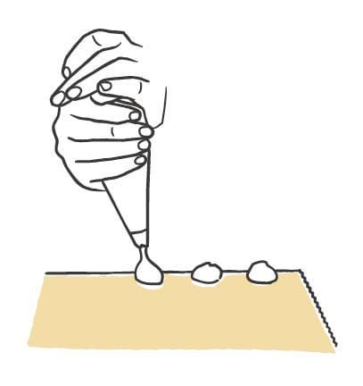
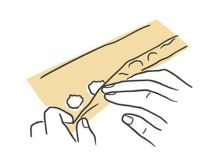
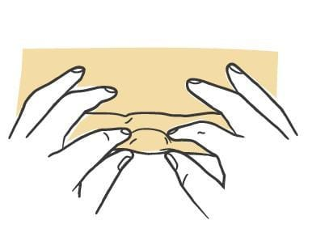
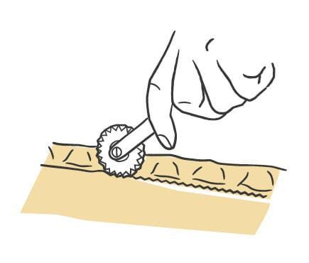
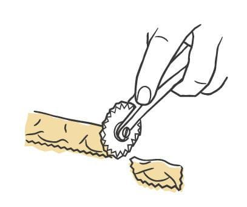

Pasta / Shapes
Agnolotti dal Plin
- Dough
- Egg Dough
- Rest
- 45 minutes to 1 hour uncovered in the refrigerator
- Source
- Pasta, Missy Robbins
- Formed
- stuffed
- Region
- Piedmont, the Langhe and Monferrato
Shaping





Method
- Make your chosen egg-based dough, then roll and sheet it.
- Dust a wooden board with 00 flour. Cover a sheet pan with parchment, then dust the parchment with semolina.
- Trim the sheets to 18-inch lengths with a knife and cut away the ragged edges. Save the scraps for soup. Keep the sheets under plastic wrap or a towel.
- Lay one sheet lengthwise. Using a pastry bag cut to a 1/4-inch opening, pipe hazelnut-sized beads of filling 1/2 inch in from the bottom edge, spaced about 1 inch apart. With a dense filling such as meat, pinch off each portion and place it by hand instead.
- If the dough feels dry rather than moderately tacky, mist it with a spray bottle held 8 to 10 inches above the board. Skip this if the dough is already tacky.
- Fold the bottom edge up and over the beads so the dough hugs them, and press the top edge down onto the sheet beneath.
- Pinch the dough closed on both sides of every bead with thumb and index finger, then go back over each pinch to confirm the seal.
- Run a fluted pastry cutter along the seam where the top edge meets the sheet, shaving the empty pasta away as tight to that seam as possible. Pull off the leftover strip and save it for another row.
- With the same cutter, cut between the pieces, centering each cut on a pinch. Each piece rolls over onto itself into an envelope as it separates.
- Move the pieces to the prepared pan in a single layer and dust the pan again with semolina.
- Repeat with the rest of that sheet, then with the remaining sheets.
- Refrigerate uncovered for 45 minutes to 1 hour to dry. Covered pieces sweat and get too wet. To hold longer, lay plastic wrap loosely over the pan and refrigerate up to 8 hours.
Notes
- Sheets are trimmed to 18 inches long. Each finished piece is about the size of a postage stamp, and a single serving runs 25 to 30 of them.
- Filling per piece: one hazelnut-sized bead, piped through a 1/4-inch opening (half the opening used for the full-size agnolotti).
- Spacing: beads sit 1/2 inch from the bottom edge and 1 inch apart. That 1-inch interval is the pinch interval and sets the finished size.
- Each bead is piped separately rather than as one continuous rope. Individual beads give a cleaner cut and a better closure, which matters with a meat filling that would otherwise burst when you cut through it. A continuous line works with a looser filling such as sunchoke.
- Cutter: fluted pastry cutter, for both the seam trim and the separating cuts.
- Seal geometry: pinch on both sides of every bead, trim the seam, then cut through the center of each pinch so the piece folds itself into an envelope. The pinch is what the name refers to.
- Storage: 45 minutes to 1 hour uncovered to dry, then up to 8 hours refrigerated under loose plastic.
- Classically finished in a pan sauce of butter and the juices from roasted meat. The shape also suits fillings that do not need volume to register, such as sunchoke or fonduta.